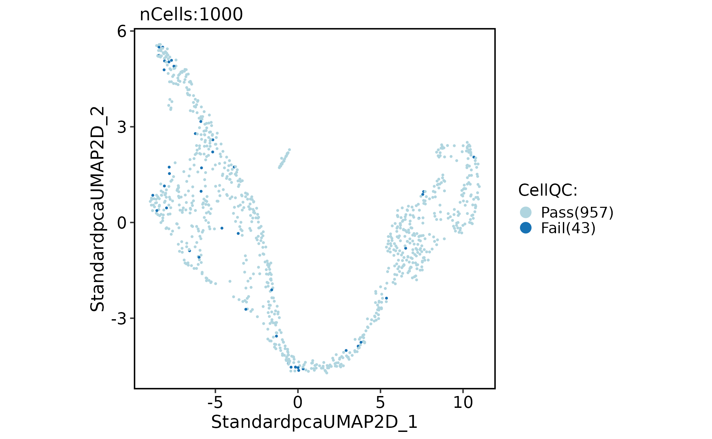
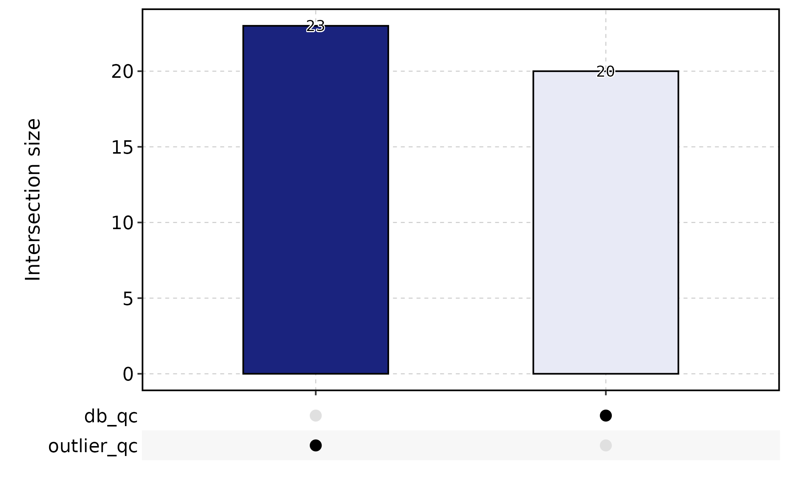
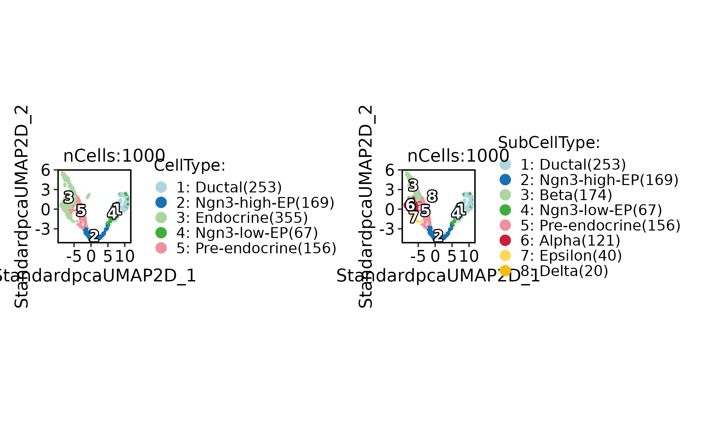
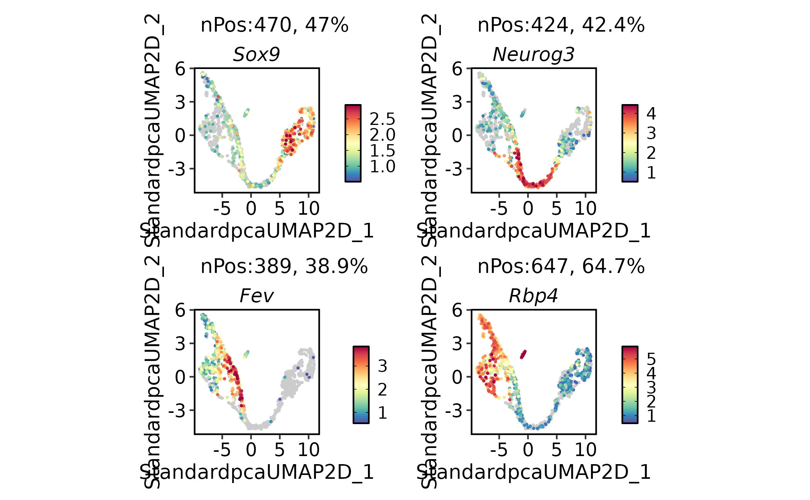
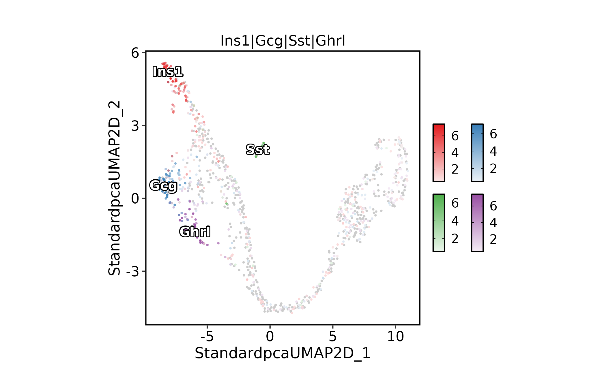
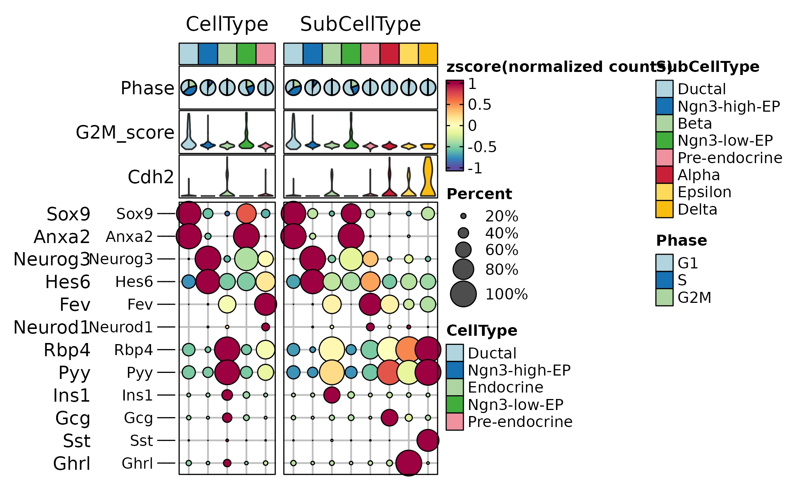

Single-cell main workflow
Source:vignettes/single-cell-main-workflow.Rmd
single-cell-main-workflow.RmdThis article shows the recommended first-pass workflow for a
single-cell Seurat object in scop. It starts from a count
matrix stored in a Seurat object, runs the standard preprocessing
workflow, checks cell-level quality, and creates the basic embedding,
feature, and group-level plots used before choosing more specialized
downstream methods.
Use this workflow as the default entry point when the goal is to inspect a new single-cell dataset. After this pass, branch into integration, annotation, trajectory, differential expression, enrichment, or interactive exploration.
This article deliberately stays at the first-pass level. It explains
the object state that downstream articles assume: which assay is active,
which reductions exist, which metadata columns can be used for grouping,
and where scop stores method-specific outputs.
Load and Inspect the Object
The examples use the bundled mouse pancreas subset. It contains RNA, spliced, and unspliced assays, so the same object can later be used for trajectory and RNA-velocity examples.
library(scop)
#> ⬢ . ⬡ ⬢ .
#> _____ _________ ____
#> / ___// ___/ __ ./ __ .
#> (__ )/ /__/ /_/ / /_/ /
#> /____/ .___/.____/ .___/
#> /_/
#> ⬢ . ⬡ . ⬢
#> ------------------------------------------------------------
#> Version: 0.8.9 (2026-07-20 update)
#> Website: https://mengxu98.github.io/scop/
#>
#> Python environment initialization is disabled
#> To enable it, set: options(scop_env_init = TRUE)
#>
#> The message can be suppressed by:
#> suppressPackageStartupMessages(library(scop))
#> or options(log_message.verbose = FALSE)
#> ------------------------------------------------------------
data(pancreas_sub)
pancreas_sub
#> An object of class Seurat
#> 47994 features across 1000 samples within 3 assays
#> Active assay: RNA (15998 features, 0 variable features)
#> 1 layer present: counts
#> 2 other assays present: spliced, unsplicedBefore running a full workflow, check the active assay, available assays, metadata columns, and whether a previous dimensional reduction already exists. These checks prevent a common documentation mistake: plotting a reduction or metadata column left over from a previous run without stating where it came from.
SeuratObject::DefaultAssay(pancreas_sub)
#> [1] "RNA"
SeuratObject::Assays(pancreas_sub)
#> [1] "RNA" "spliced" "unspliced"
head(pancreas_sub@meta.data)
#> orig.ident nCount_RNA nFeature_RNA S_score G2M_score
#> AAACCTGAGCCTTGAT SeuratProject 7071 2613 -0.01470664 -0.2326104
#> AAACCTGGTAAGTGGC SeuratProject 5026 2211 -0.17998111 -0.1260295
#> AAACGGGAGATATGGT SeuratProject 6194 2486 -0.16794573 -0.1666881
#> AAACGGGCAAAGAATC SeuratProject 6370 2581 -0.17434505 -0.2216024
#> AAACGGGGTACAGTTC SeuratProject 9182 2906 -0.18656224 -0.1571970
#> AAACGGGTCAGCTCTC SeuratProject 5892 2282 -0.12347911 -0.2298337
#> nCount_spliced nFeature_spliced nCount_unspliced
#> AAACCTGAGCCTTGAT 7071 2613 953
#> AAACCTGGTAAGTGGC 5026 2211 1000
#> AAACGGGAGATATGGT 6194 2486 721
#> AAACGGGCAAAGAATC 6370 2581 1544
#> AAACGGGGTACAGTTC 9182 2906 2262
#> AAACGGGTCAGCTCTC 5892 2282 935
#> nFeature_unspliced CellType SubCellType Phase
#> AAACCTGAGCCTTGAT 638 Ductal Ductal G1
#> AAACCTGGTAAGTGGC 623 Ngn3-high-EP Ngn3-high-EP G1
#> AAACGGGAGATATGGT 550 Ductal Ductal G1
#> AAACGGGCAAAGAATC 1015 Endocrine Beta G1
#> AAACGGGGTACAGTTC 1096 Endocrine Beta G1
#> AAACGGGTCAGCTCTC 712 Ngn3-low-EP Ngn3-low-EP G1
SeuratObject::Reductions(pancreas_sub)
#> NULLRun the Standard Workflow
RunStandardWorkflow() runs the common preprocessing
path: normalization, variable feature selection, scaling, dimensional
reduction, neighbor graph construction, clustering, and UMAP. The result
stays in the same Seurat object.
pancreas_sub <- RunStandardWorkflow(
pancreas_sub,
assay = "RNA",
nHVF = 2000,
linear_reduction_dims = 50,
cluster_resolution = 0.8,
verbose = FALSE
)
#> ℹ [2026-08-02 13:05:16] Skip `log1p()` because `layer = data` is not "counts"
pancreas_sub
#> An object of class Seurat
#> 47994 features across 1000 samples within 3 assays
#> Active assay: RNA (15998 features, 2000 variable features)
#> 3 layers present: counts, data, scale.data
#> 2 other assays present: spliced, unspliced
#> 3 dimensional reductions calculated: Standardpca, StandardpcaUMAP2D, StandardUMAP2D
SeuratObject::Reductions(pancreas_sub)
#> [1] "Standardpca" "StandardpcaUMAP2D" "StandardUMAP2D"The stable contract is the Seurat object itself: normalized
expression layers are stored in the assay, reductions are stored in
@reductions, metadata columns are added to
@meta.data, and method-specific summaries are stored under
@tools when a wrapper has additional results.
For this object, CellType is a coarse biological label
and SubCellType contains finer developmental states. Those
labels are useful for examples, but they should still be checked with
marker genes before being used for biological claims.
Check Cell Quality
Run quality control before interpreting clusters.
RunCellQC() combines common cell-level flags, writes
summary columns to metadata, and keeps details under the object tools
slot.
pancreas_sub <- RunCellQC(pancreas_sub)
#> ◌ [2026-08-02 13:05:19] Running cell-level quality control
#> ℹ [2026-08-02 13:05:20] Data type is raw counts
#> ℹ [2026-08-02 13:05:20] Running scDblFinder
#> ! [2026-08-02 13:06:17] Skip "atac" QC because `assay = 'RNA'` is not a <ChromatinAssay>
#> ℹ [2026-08-02 13:06:17] Running decontX
#> Warning in .library_size_factors(assay(x, assay.type), ...): 'librarySizeFactors' is deprecated.
#> Use 'scrapper::centerSizeFactors' instead.
#> See help("Deprecated")
#> Warning in .local(x, ...): 'normalizeCounts' is deprecated.
#> Use 'scrapper::normalizeCounts' instead.
#> See help("Deprecated")
#> ℹ [2026-08-02 13:06:27] decontX contamination (median/mean/max): 0.0136 / 0.1628 / 0.7465
#> ℹ [2026-08-02 13:06:27] decontX assay stored as decontXcounts
#> ✔ [2026-08-02 13:06:27] decontX decontamination completed
#> ✔ [2026-08-02 13:06:27] ● Total cells: 1000
#> ✔ ◉ 957 cells remained
#> ✔ ◯ 43 cells filtered out:
#> ✔ ◯ 20 potential doublets
#> ✔ ◯ 0 ATAC QC failed cells
#> ✔ ◯ 0 high-contamination cells
#> ✔ ◯ 23 outlier cells
#> ✔ ◯ 0 low-UMI cells
#> ✔ ◯ 0 low-gene cells
#> ✔ ◯ 0 high-mito cells
#> ✔ ◯ 0 high-ribo cells
#> ✔ ◯ 0 ribo_mito_ratio outlier cells
#> ✔ ◯ 0 species-contaminated cells
table(pancreas_sub$CellQC)
#>
#> Pass Fail
#> 957 43
names(pancreas_sub@tools)
#> [1] "decontX"Plot the final QC label first, then inspect the individual failure categories when too many cells fail.
CellDimPlot(
pancreas_sub,
group.by = "CellQC",
reduction = "UMAP"
)
CellStatPlot(
pancreas_sub,
stat.by = c(
"db_qc", "decontX_qc", "outlier_qc",
"umi_qc", "gene_qc", "mito_qc",
"ribo_qc", "ribo_mito_ratio_qc", "species_qc"
),
plot_type = "upset",
stat_level = "Fail"
)
#> ! [2026-08-02 13:06:28] `stat_type` is forcibly set to "count" when plot "sankey", "chord", "venn", and "upset"
#> Warning: Using `size` aesthetic for lines was deprecated in ggplot2 3.4.0.
#> ℹ Please use `linewidth` instead.
#> ℹ The deprecated feature was likely used in the ggupset package.
#> Please report the issue at <https://github.com/const-ae/ggupset/issues>.
#> This warning is displayed once per session.
#> Call `lifecycle::last_lifecycle_warnings()` to see where this warning was
#> generated.
#> `geom_line()`: Each group consists of only one observation.
#> ℹ Do you need to adjust the group aesthetic?
#> `geom_line()`: Each group consists of only one observation.
#> ℹ Do you need to adjust the group aesthetic?
Plot Cell Groups and Features
Use CellDimPlot() to inspect discrete annotations and
cluster structure. FeatureDimPlot() is the companion for
gene expression or metadata-derived numeric features.
CellDimPlot(
pancreas_sub,
group.by = c("CellType", "SubCellType"),
reduction = "UMAP",
label = TRUE
)
FeatureDimPlot(
pancreas_sub,
features = c("Sox9", "Neurog3", "Fev", "Rbp4"),
reduction = "UMAP"
)
When several marker genes define related states,
compare_features = TRUE helps identify the dominant feature
per cell. In the pancreas example, Ins1, Gcg,
Sst, and Ghrl are hormone genes used to
distinguish beta, alpha, delta, and epsilon endocrine states.
FeatureDimPlot(
pancreas_sub,
features = c("Ins1", "Gcg", "Sst", "Ghrl"),
compare_features = TRUE,
label = TRUE,
label_insitu = TRUE,
reduction = "UMAP"
)
#> Warning: No shared levels found between `names(values)` of the manual scale and the
#> data's colour values.
Summarize Marker Patterns by Group
Use grouped heatmaps after the embedding looks coherent. This is usually more readable than inspecting many feature plots one by one. Here the dot layer summarizes the fraction of cells expressing each marker, and the heatmap color summarizes average expression by group. A marker should be interpreted from both signals: strong average expression in very few cells is different from broad expression across a group.
ht <- GroupHeatmap(
pancreas_sub,
features = c(
"Sox9", "Anxa2",
"Neurog3", "Hes6",
"Fev", "Neurod1",
"Rbp4", "Pyy",
"Ins1", "Gcg", "Sst", "Ghrl"
),
group.by = c("CellType", "SubCellType"),
heatmap_palette = "Spectral",
cell_annotation = c("Phase", "G2M_score", "Cdh2"),
show_row_names = TRUE,
row_names_side = "left",
add_dot = TRUE,
add_reticle = TRUE
)
#> Warning: No shared levels found between `names(values)` of the manual scale and the
#> data's colour values.
#> No shared levels found between `names(values)` of the manual scale and the
#> data's colour values.
#> No shared levels found between `names(values)` of the manual scale and the
#> data's colour values.
#> No shared levels found between `names(values)` of the manual scale and the
#> data's colour values.
#> No shared levels found between `names(values)` of the manual scale and the
#> data's colour values.
#> No shared levels found between `names(values)` of the manual scale and the
#> data's colour values.
#> No shared levels found between `names(values)` of the manual scale and the
#> data's colour values.
#> No shared levels found between `names(values)` of the manual scale and the
#> data's colour values.
#> No shared levels found between `names(values)` of the manual scale and the
#> data's colour values.
#> No shared levels found between `names(values)` of the manual scale and the
#> data's colour values.
#> No shared levels found between `names(values)` of the manual scale and the
#> data's colour values.
#> No shared levels found between `names(values)` of the manual scale and the
#> data's colour values.
#> No shared levels found between `names(values)` of the manual scale and the
#> data's colour values.
#> No shared levels found between `names(values)` of the manual scale and the
#> data's colour values.
#> No shared levels found between `names(values)` of the manual scale and the
#> data's colour values.
#> No shared levels found between `names(values)` of the manual scale and the
#> data's colour values.
#> No shared levels found between `names(values)` of the manual scale and the
#> data's colour values.
#> No shared levels found between `names(values)` of the manual scale and the
#> data's colour values.
#> No shared levels found between `names(values)` of the manual scale and the
#> data's colour values.
#> No shared levels found between `names(values)` of the manual scale and the
#> data's colour values.
#> No shared levels found between `names(values)` of the manual scale and the
#> data's colour values.
#> No shared levels found between `names(values)` of the manual scale and the
#> data's colour values.
#> No shared levels found between `names(values)` of the manual scale and the
#> data's colour values.
#> No shared levels found between `names(values)` of the manual scale and the
#> data's colour values.
#> No shared levels found between `names(values)` of the manual scale and the
#> data's colour values.
#> No shared levels found between `names(values)` of the manual scale and the
#> data's colour values.
print(ht$plot)
What to Report
A compact first-pass report should include:
- the object source, assay, and expression layer used;
- the cell and feature counts before and after filtering;
- the preprocessing parameters that affect interpretation, especially variable features, PCs, clustering resolution, and UMAP reduction name;
- QC pass or fail summaries and the dominant failure categories;
- the annotation column used for plots and any marker genes used to validate it;
- the output locations used downstream: assay layers, reductions,
metadata, and
srt@tools.
Keep this article as the short entry point. Use the specialized articles for batch integration, annotation transfer, trajectories, differential expression, pathway analysis, and deployment.